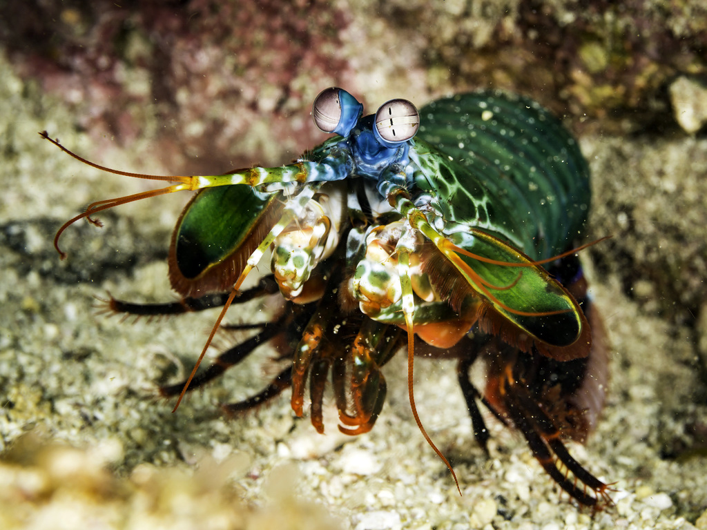
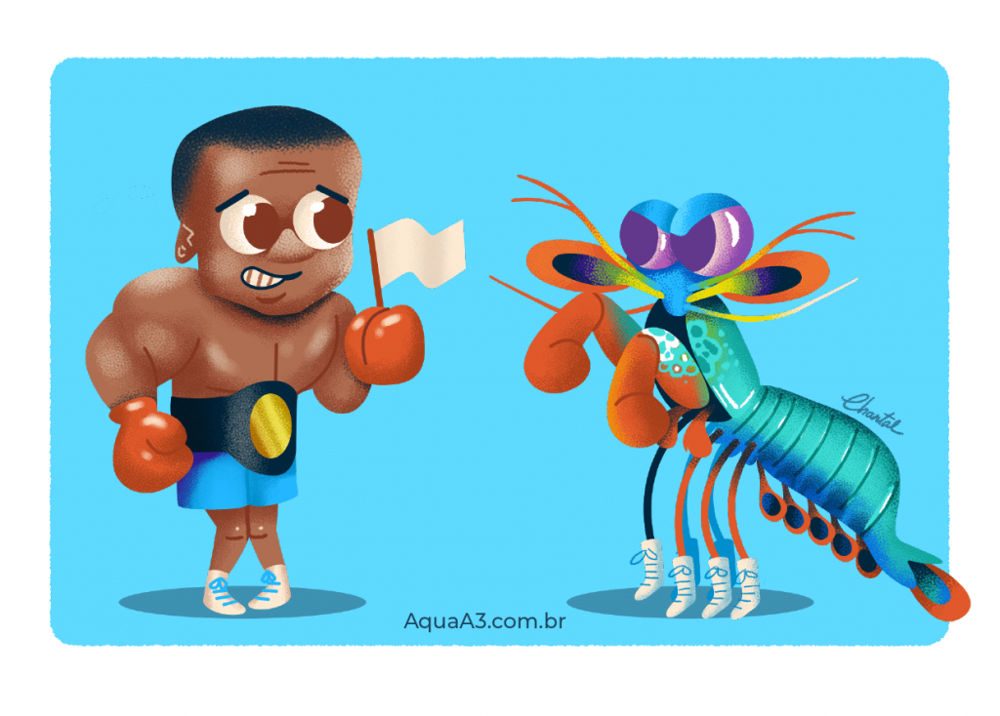

Fatos sobre o Stomatopoda
Stomatopoda

Stomatopoda (ou estomatópode), chamados popularmente de tamarutacas ou de lacraias-do-mar no Brasil, é uma ordem de crustáceos marinhos, que agrupa cerca de 400 espécies, caracterizadas principalmente pela morfologia da segunda pata torácica, que é modificada em apêndice subquelado, lembrando uma pata de louva-a-deus.
Odontodactylus scyllarus
| Reino |
Animalia |
| Filo |
Arthropoda |
| Subifilo |
Crustacea |
| Classe |
Malacostraca |
| Subclasse |
Hoplocarida |
| Ordem |
Stomatopoda |
Visão

Esses animais possuem o mais complexo sistema de visão de cores do mundo animal, pois enxergam 12 cores primárias, correspondentes aos 12 pigmentos distintos presentes em sua retina. Eles possuem um sentido de visão muito apurado e capaz de interpretar polarização no espectro ultravioleta e infravermelho.
Soco

São capazes de desferir um dos mais rápidos e violentos golpes do reino animal, um soco que pode apresentar a velocidade de um tiro calibre .22 (equivalente a 720 km/h) e uma pressão de impacto de 600 N/cm².
Onde Encontrar
No Brasil eles estão representados por cerca de 40 espécies distribupidas entre 9 famílias. Estomatópodes podem ser encontrados no litoral do nordeste brasileiro, mas não são animais fáceis de se observar pelos seus hábitos mais furtivos.